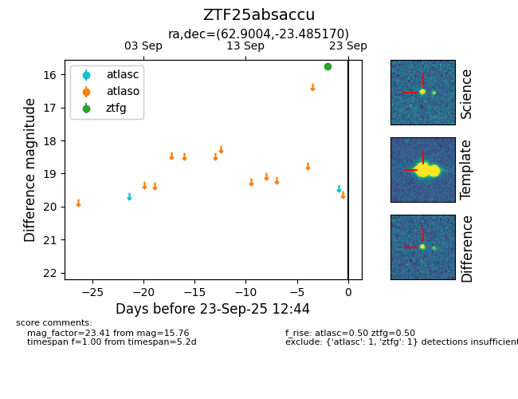

FINK: ZTF25absaccu
Lasair: ZTF25absaccu
ALeRCE: ZTF25absaccu
ZTF25absaccu (ztf,fink)
equatorial (ra, dec) = (62.9004,-23.48517)
galactic (l, b) = (219.9126,-44.90657)

last atlasc=nan, ztfg=15.76
1 atlasc, 1 ztfg detections